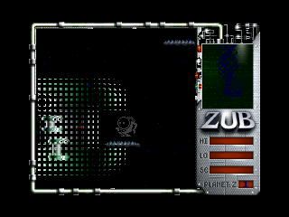
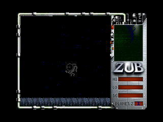

| YS3 Megapreview! |
|
We've finally had the chance to play an early version of John Dow's
remake of Zub. Not exactly a straightforward shoot-'em-up, this bizarre
mix of platforming and blasting was originally an unfeasibly tricky
game. The remake looks like it'll be following in its predecessor's
footsteps, with plenty of big nasties to dog your footsteps.
Flying the platforms around and blasting the aliens is a good laugh, but you soon find yourself being increasingly more cautious as you ascend the level - one wrong move and you'll end up falling back to earth, and it's a very long climb to get back to the top! As with all of the esteemed Mr Dow's games, it looks and sounds great. We're hoping it'll have a slightly less steep learning curve than the original when it's finished, but from this early peek, we don't think it can really go wrong. |
   |
| Back to Future Shocks |